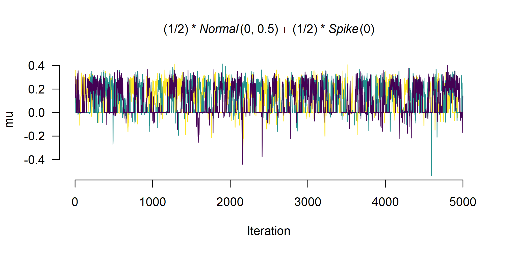
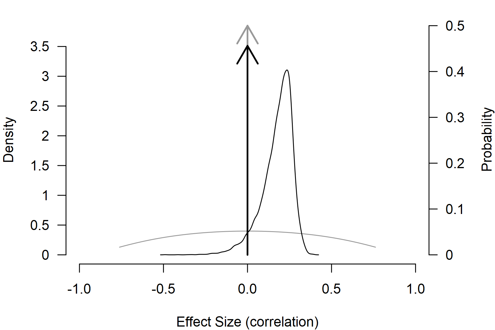

Tutorial: Adjusting for Publication Bias in JASP and R - Selection Models, PET-PEESE, and Robust Bayesian Meta-Analysis
František Bartoš, Maximilian Maier, Daniel S. Quintana & Eric-Jan Wagenmakers
31st of May 2023 (updated: 30th of April 2026)
Source:vignettes/v30-tutorial.Rmd
v30-tutorial.RmdThis R markdown file accompanies the tutorial Adjusting for publication bias in JASP and R: Selection models, PET-PEESE, and robust Bayesian meta-analysis published in Advances in Methods and Practices in Psychological Science (Bartoš et al., 2022).
The following R-markdown file illustrates how to:
- Load a CSV file into R,
- Transform effect sizes,
- Perform a random effect meta-analysis,
- Adjust for publication bias with:
- PET-PEESE (Stanley, 2017; Stanley & Doucouliagos, 2014),
- Selection models (Iyengar & Greenhouse, 1988; Vevea & Hedges, 1995),
- Robust Bayesian meta-analysis (RoBMA) (Bartoš et al., 2023; Maier et al., 2023).
See the full paper for additional details regarding the data set, methods, and interpretation.
Set-up
Before we start, we need to install JAGS (which is
needed for installation of the RoBMA R package) and the R
packages that we use in the analysis. Specifically, the
RoBMA, weightr, and metafor R
packages.
JAGS can be downloaded from the JAGS website.
Subsequently, we install the R packages with the
install.packages() function.
install.packages(c("RoBMA", "weightr", "metafor"))Once all of the packages are installed, we can load them into the
workspace with the library() function.
Lui (2015)
Lui (2015) studied how the acculturation mismatch (AM) that is the result of the contrast between the collectivist cultures of Asian and Latin immigrant groups and the individualist culture in the United States correlates with intergenerational cultural conflict (ICC). Lui (2015) meta-analyzed 18 independent studies correlating AM with ICC. A standard reanalysis indicates a significant effect of AM on increased ICC, r = 0.250, p < .001.
Data manipulation
First, we load the Lui2015.csv file into R with the
read.csv() function and inspect the first six data entries
with the head() function (the data set is also included in
the package and can be accessed via the
data("Lui2015", package = "RoBMA") call).
df <- read.csv(file = "Lui2015.csv")
head(df)
#> r n study
#> 1 0.21 115 Ahn, Kim, & Park (2008)
#> 2 0.29 283 Basanez et al. (2013)
#> 3 0.22 80 Bounkeua (2007)
#> 4 0.26 109 Hajizadeh (2009)
#> 5 0.23 61 Hamid (2007)
#> 6 0.54 107 Hwang & Wood (2009a)We see that the data set contains three columns. The first column
called r contains the effect sizes coded as correlation
coefficients, the second column called n contains the
sample sizes, and the third column called study contains
names of the individual studies.
We can access the individual variables using the data set name and
the dollar ($) sign followed by the name of the column. For
example, we can print all of the effect sizes with the df$r
command.
df$r
#> [1] 0.21 0.29 0.22 0.26 0.23 0.54 0.56 0.29 0.26 0.02 -0.06 0.38 0.25 0.08 0.17 0.33 0.36 0.13The printed output shows that the data set contains mostly positive effect sizes with the largest correlation coefficient r = 0.54.
Effect size transformations
Before we start analyzing the data, we transform the effect sizes from correlation coefficients to Fisher’s z. Correlation coefficients are not well suited for meta-analysis because (1) they are bounded to a range (-1, 1) with non-linear increases near the boundaries and (2) the standard error of the correlation coefficients is related to the effect size. Fisher’s z transformation mitigates both issues. It unwinds the (-1, 1) range to (, ), makes the sampling distribution approximately normal, and breaks the dependency between standard errors and effect sizes.
To apply the transformation, we use the escalc()
function from the metafor package. We pass the correlation
coefficients into the ri argument, the sample sizes to the
ni argument, and set measure = "ZCOR". The
function escalc() then saves the transformed effect size
estimates into a data frame called dfz, where the
yi column corresponds to Fisher’s z transformation
of the correlation coefficient and vi column corresponds to
the sampling variance of Fisher’s z.
dfz <- metafor::escalc(
ri = r, ni = n, measure = "ZCOR",
data = df
)
head(dfz)
#>
#> r n study yi vi
#> 1 0.21 115 Ahn, Kim, & Park (2008) 0.2132 0.0089
#> 2 0.29 283 Basanez et al. (2013) 0.2986 0.0036
#> 3 0.22 80 Bounkeua (2007) 0.2237 0.0130
#> 4 0.26 109 Hajizadeh (2009) 0.2661 0.0094
#> 5 0.23 61 Hamid (2007) 0.2342 0.0172
#> 6 0.54 107 Hwang & Wood (2009a) 0.6042 0.0096Re-analysis with random effect meta-analysis
We now estimate a random effect meta-analysis with the
rma() function imported from the metafor
package (Viechtbauer,
2010) and verify that we arrive at the same results as
reported in the Lui (2015) paper. The
yi argument is used to pass the column name containing
effect sizes, the vi argument is used to pass the column
name containing sampling variances, and the data argument
is used to pass the data frame containing both variables.
fit_rma <- metafor::rma(yi = yi, vi = vi, data = dfz)
fit_rma
#>
#> Random-Effects Model (k = 18; tau^2 estimator: REML)
#>
#> tau^2 (estimated amount of total heterogeneity): 0.0229 (SE = 0.0107)
#> tau (square root of estimated tau^2 value): 0.1513
#> I^2 (total heterogeneity / total variability): 77.79%
#> H^2 (total variability / sampling variability): 4.50
#>
#> Test for Heterogeneity:
#> Q(df = 17) = 73.5786, p-val < .0001
#>
#> Model Results:
#>
#> estimate se zval pval ci.lb ci.ub
#> 0.2538 0.0419 6.0568 <.0001 0.1717 0.3359 ***
#>
#> ---
#> Signif. codes: 0 '***' 0.001 '**' 0.01 '*' 0.05 '.' 0.1 ' ' 1Indeed, we find that the effect size estimate from the random effect
meta-analysis corresponds to the one reported in Lui (2015). It is important
to remember that we used Fisher’s z to estimate the models;
therefore, the estimated results are on the Fisher’s z scale.
To transform the effect size estimate to the correlation coefficients,
we can use metafor::transf.ztor(),
metafor::transf.ztor(fit_rma$b)
#> [,1]
#> intrcpt 0.2484877Transforming the effect size estimate results in the correlation coefficient = 0.25.
PET-PEESE
The first publication bias adjustment that we perform is PET-PEESE.
PET-PEESE adjusts for the relationship between effect sizes and standard
errors. To our knowledge, PET-PEESE is not currently implemented in any
R package. However, since PET and PEESE are weighted regressions of
effect sizes on standard errors (PET) or standard errors squared
(PEESE), we can estimate both PET and PEESE models with the
lm() function. Inside the lm() function call,
we specify that yi is the response variable (left hand side
of the ~ sign) and I(sqrt(vi)) is the
predictor (the right-hand side). Furthermore, we specify the
weights argument that allows us to weight the
meta-regression by inverse variance and set the data = dfz
argument, which specifies that all of the variables come from the
transformed, dfz, data set.
fit_PET <- lm(yi ~ I(sqrt(vi)), weights = 1/vi, data = dfz)
summary(fit_PET)
#>
#> Call:
#> lm(formula = yi ~ I(sqrt(vi)), data = dfz, weights = 1/vi)
#>
#> Weighted Residuals:
#> Min 1Q Median 3Q Max
#> -3.8132 -0.9112 -0.0139 0.5166 3.3151
#>
#> Coefficients:
#> Estimate Std. Error t value Pr(>|t|)
#> (Intercept) -0.0008722 0.1081247 -0.008 0.9937
#> I(sqrt(vi)) 2.8549650 1.3593450 2.100 0.0519 .
#> ---
#> Signif. codes: 0 '***' 0.001 '**' 0.01 '*' 0.05 '.' 0.1 ' ' 1
#>
#> Residual standard error: 1.899 on 16 degrees of freedom
#> Multiple R-squared: 0.2161, Adjusted R-squared: 0.1671
#> F-statistic: 4.411 on 1 and 16 DF, p-value: 0.05192The summary() function allows us to explore details of
the fitted model. The (Intercept) coefficient refers to the
meta-analytic effect size (corrected for the correlation with standard
errors). Again, it is important to keep in mind that the effect size
estimate is on the Fisher’s z scale. We obtain the estimate on
correlation scale with the metafor::transf.ztor() function
(we pass the estimated effect size using the
summary(fit_PET)$coefficients["(Intercept)", "Estimate"]
command, which extracts the estimate from the fitted model).
metafor::transf.ztor(summary(fit_PET)$coefficients["(Intercept)", "Estimate"])
#> [1] -0.000872208Since the Fisher’s z transformation is almost linear around zero, we obtain an almost identical estimate.
More importantly, since the test for the effect size with PET was not
significant at
,
we interpret the PET model. However, if the test for effect size were
significant, we would fit and interpret the PEESE model. The PEESE model
can be fitted in an analogous way, by replacing the predictor of
standard errors with standard errors squared, which corresponds to the
sampling variances in vi.
fit_PEESE <- lm(yi ~ vi, weights = 1/vi, data = dfz)
summary(fit_PEESE)
#>
#> Call:
#> lm(formula = yi ~ vi, data = dfz, weights = 1/vi)
#>
#> Weighted Residuals:
#> Min 1Q Median 3Q Max
#> -3.7961 -0.9581 -0.1156 0.6718 3.4608
#>
#> Coefficients:
#> Estimate Std. Error t value Pr(>|t|)
#> (Intercept) 0.11498 0.06201 1.854 0.0822 .
#> vi 15.58064 7.96723 1.956 0.0682 .
#> ---
#> Signif. codes: 0 '***' 0.001 '**' 0.01 '*' 0.05 '.' 0.1 ' ' 1
#>
#> Residual standard error: 1.927 on 16 degrees of freedom
#> Multiple R-squared: 0.1929, Adjusted R-squared: 0.1425
#> F-statistic: 3.824 on 1 and 16 DF, p-value: 0.06821Selection models
The second publication bias adjustment that we will perform is
selection models. Selection models adjust for the different publication
probabilities in different p-value intervals. Selection models
are implemented in the weightr package
(weightfunct() function; Coburn et
al. (2019)) and newly also in the
metafor package (selmodel() function; Viechtbauer (2010)).
First, we use the weightr implementation and fit the “4PSM”
selection model that specifies three distinct p-value
intervals: (1) covering the range of significant p-values for
effect sizes in the expected direction (0.00-0.025), (2) covering the
range of “marginally” significant p-values for effect sizes in
the expected direction (0.025-0.05), and (3) covering the range of
non-significant p-values (0.05-1). We use the Fisher’s
z effect sizes from dfz. To fit the model, we need
to pass the effect sizes (dfz$yi) into the
effect argument and variances (dfz$vi) into
the v argument (note that we need to pass the vector of
values directly since the weightfunct() function does not
allow us to pass the data frame directly as did the previous functions).
We further set steps = c(0.025, 0.05) to specify the
appropriate cut-points (note that the steps correspond to one-sided
p-values), and we set table = TRUE to obtain the
frequency of p values in each of the specified intervals.
fit_4PSM <- weightr::weightfunct(
effect = dfz$yi, v = dfz$vi,
steps = c(0.025, 0.05), table = TRUE
)
fit_4PSM
#>
#> Unadjusted Model (k = 18):
#>
#> tau^2 (estimated amount of total heterogeneity): 0.0212 (SE = 0.0097)
#> tau (square root of estimated tau^2 value): 0.1456
#>
#> Test for Heterogeneity:
#> Q(df = 17) = 73.5786, p-val = 1.110454e-08
#>
#> Model Results:
#>
#> estimate std.error z-stat p-val ci.lb ci.ub
#> Intercept 0.2532 0.04092 6.188 6.1076e-10 0.173 0.3334
#>
#> Adjusted Model (k = 18):
#>
#> tau^2 (estimated amount of total heterogeneity): 0.0302 (SE = 0.0161)
#> tau (square root of estimated tau^2 value): 0.1737
#>
#> Test for Heterogeneity:
#> Q(df = 17) = 73.5786, p-val = 1.110454e-08
#>
#> Model Results:
#>
#> estimate std.error z-stat p-val ci.lb ci.ub
#> Intercept 0.1574 0.09582 1.6430 0.10039 -0.03037 0.3452
#> 0.025 < p < 0.05 1.1843 0.99195 1.1939 0.23251 -0.75988 3.1285
#> 0.05 < p < 1 0.2059 0.21253 0.9688 0.33263 -0.21065 0.6225
#>
#> Likelihood Ratio Test:
#> X^2(df = 2) = 3.387474, p-val = 0.18383
#>
#> Number of Effect Sizes per Interval:
#>
#> Frequency
#> p-values <0.025 13
#> 0.025 < p-values < 0.05 2
#> 0.05 < p-values < 1 3Note the warning message informing us about the fact that our data do
not contain a sufficient number of p-values in one of the
p-value intervals. The model output obtained by printing the
fitted model object fit_4PSM shows that there is only one
p-value in the (0.025, 0.05) interval. We can deal with this
issue by joining the “marginally” significant and non-significant
p-value interval, resulting in the “3PSM” model.
fit_3PSM <- weightr::weightfunct(
effect = dfz$yi, v = dfz$vi,
steps = c(0.025), table = TRUE
)
fit_3PSM
#>
#> Unadjusted Model (k = 18):
#>
#> tau^2 (estimated amount of total heterogeneity): 0.0212 (SE = 0.0097)
#> tau (square root of estimated tau^2 value): 0.1456
#>
#> Test for Heterogeneity:
#> Q(df = 17) = 73.5786, p-val = 1.110454e-08
#>
#> Model Results:
#>
#> estimate std.error z-stat p-val ci.lb ci.ub
#> Intercept 0.2532 0.04092 6.188 6.1076e-10 0.173 0.3334
#>
#> Adjusted Model (k = 18):
#>
#> tau^2 (estimated amount of total heterogeneity): 0.0237 (SE = 0.0115)
#> tau (square root of estimated tau^2 value): 0.1539
#>
#> Test for Heterogeneity:
#> Q(df = 17) = 73.5786, p-val = 1.110454e-08
#>
#> Model Results:
#>
#> estimate std.error z-stat p-val ci.lb ci.ub
#> Intercept 0.2066 0.06948 2.974 0.0029393 0.07046 0.3428
#> 0.025 < p < 1 0.4643 0.38263 1.214 0.2249190 -0.28560 1.2143
#>
#> Likelihood Ratio Test:
#> X^2(df = 1) = 0.8963672, p-val = 0.34376
#>
#> Number of Effect Sizes per Interval:
#>
#> Frequency
#> p-values <0.025 13
#> 0.025 < p-values < 1 5The new model does not suffer from the estimation problem due to the
limited number of p-values in the intervals, so we can now
interpret the results with more confidence. First, we check the test for
heterogeneity that clearly rejects the null hypothesis
Q(df = 17) = 75.4999, $p$ = 5.188348e-09 (if we did not
find evidence for heterogeneity, we could have proceeded by fitting the
fixed-effect version of the model by specifying the
fe = TRUE argument). We follow by checking the test for
publication bias which is a likelihood ratio test comparing the
unadjusted and adjusted estimate
X^2(df = 1) = 3.107176, $p$ = 0.077948. The result of the
test is slightly ambiguous: we would reject the null hypothesis of no
publication bias with
but not with
.
If we decide to interpret the estimated effect size, we have to again
transform it back to the correlation scale. The effect size estimate
corresponds to the second value in the fit_3PSM$adj_est
object for the random effect model.
metafor::transf.ztor(fit_3PSM$adj_est[2])
#> [1] 0.2037403Alternatively, we could have conducted the analysis analogously but
with the metafor package. We use the random effect
meta-analysis object from above and specify the
type = "stepfun" argument to obtain a step weight function
and set the appropriate steps with the steps = c(0.025)
argument.
fit_sel_z <- metafor::selmodel(fit_rma, type = "stepfun", steps = c(0.025))
fit_sel_z
#>
#> Random-Effects Model (k = 18; tau^2 estimator: ML)
#>
#> tau^2 (estimated amount of total heterogeneity): 0.0237 (SE = 0.0115)
#> tau (square root of estimated tau^2 value): 0.1538
#>
#> Test for Heterogeneity:
#> LRT(df = 1) = 31.9928, p-val < .0001
#>
#> Model Results:
#>
#> estimate se zval pval ci.lb ci.ub
#> 0.2067 0.0695 2.9755 0.0029 0.0705 0.3428 **
#>
#> Test for Selection Model Parameters:
#> LRT(df = 1) = 0.8964, p-val = 0.3438
#>
#> Selection Model Results:
#>
#> k estimate se zval pval ci.lb ci.ub
#> 0 < p <= 0.025 13 1.0000 --- --- --- --- ---
#> 0.025 < p <= 1 5 0.4645 0.3828 -1.3987 0.1619 0.0000 1.2149
#>
#> ---
#> Signif. codes: 0 '***' 0.001 '**' 0.01 '*' 0.05 '.' 0.1 ' ' 1The output verifies the results obtained in the previous analysis.
Robust Bayesian meta-analysis
The third and final publication bias adjustment that we will perform
is robust Bayesian meta-analysis (RoBMA). RoBMA uses Bayesian
model-averaging to combine inference from both PET-PEESE and selection
models. We use the RoBMA R package (and the
RoBMA() function; Bartoš & Maier
(2020)) to fit the 36-model ensemble
based on an orthogonal combination of models assuming the presence and
absence of the effect size, heterogeneity, and publication bias. The
models assuming the presence of publication bias are further split into
six weight function models and models utilizing the PET and PEESE
publication bias adjustment. To fit the model, we pass the Fisher’s
z effect sizes and sampling variances into the yi
and vi arguments and set measure = "ZCOR". We
use the seed argument to make the analysis reproducible (it
uses MCMC sampling, in contrast to the previous methods). We turn on
parallel estimation by setting the parallel = TRUE
argument; if parallel processing fails, try rerunning the model or
turning parallel processing off.
The default prior distributions and estimation algorithm changed after version 3.6.1, so we specify the prior distributions explicitly.
prior_effect_361 <- prior("normal", list(mean = 0, sd = 0.5))
prior_heterogeneity_361 <- prior("invgamma", list(shape = 1, scale = 0.075))
prior_bias_361 <- list(
prior_weightfunction("two-sided", c(0.05), wf_cumulative(c(1, 1)), prior_weights = 1/12),
prior_weightfunction("two-sided", c(0.05, 0.10), wf_cumulative(c(1, 1, 1)), prior_weights = 1/12),
prior_weightfunction("one-sided", c(0.05), wf_cumulative(c(1, 1)), prior_weights = 1/12),
prior_weightfunction("one-sided", c(0.025, 0.05), wf_cumulative(c(1, 1, 1)), prior_weights = 1/12),
prior_weightfunction("one-sided", c(0.05, 0.50), wf_cumulative(c(1, 1, 1)), prior_weights = 1/12),
prior_weightfunction("one-sided", c(0.025, 0.05, 0.50), wf_cumulative(c(1, 1, 1, 1)), prior_weights = 1/12),
prior_PET("Cauchy", list(location = 0, scale = 1), truncation = list(0, Inf), prior_weights = 1/4),
prior_PEESE("Cauchy", list(location = 0, scale = 10), truncation = list(0, Inf), prior_weights = 1/4)
)These prior distributions reproduce the version 3.6.1 specification after the old approximate Cohen’s d to Fisher’s z prior rescaling. On the Cohen’s d scale, the effect prior was Normal(0, 1), the heterogeneity prior was InvGamma(1, 0.15), and the PEESE prior scale was 5.
fit_RoBMA <- RoBMA(
yi = yi, vi = vi, measure = "ZCOR",
prior_effect = prior_effect_361,
prior_heterogeneity = prior_heterogeneity_361,
prior_bias = prior_bias_361,
data = dfz, seed = 1, parallel = TRUE
)This step used to take some time depending on your CPU. The 4.0 version of the package uses product-space parameterization, which notably speeds up the sampling and usually takes under a minute for moderately large datasets.
We use the summary() function to explore details of the
fitted model.
summary(fit_RoBMA)
#>
#> Robust Bayesian Model-Averaged Random-Effects Model (k = 18)
#>
#> Component Inclusion
#> Prior prob. Post. prob. Inclusion BF error%(Inclusion BF)
#> Effect 0.500 0.544 1.192 8.035
#> Heterogeneity 0.500 1.000 >14999.000 NA
#> Publication Bias 0.500 0.839 5.193 6.826
#>
#> Estimates
#> Mean SD 0.025 0.5 0.975 error(MCMC) error(MCMC)/SD ESS R-hat
#> mu 0.098 0.113 -0.007 0.039 0.300 0.00479 0.042 560 1.002
#> tau 0.166 0.057 0.085 0.156 0.300 0.00157 0.028 1460 1.002
#>
#> Publication Bias
#> Mean SD 0.025 0.5 0.975 error(MCMC) error(MCMC)/SD ESS R-hat
#> omega[0,0.025] 1.000 0.000 1.000 1.000 1.000 NA NA NA NA
#> omega[0.025,0.05] 0.929 0.164 0.400 1.000 1.000 0.00267 0.016 4078 1.004
#> omega[0.05,0.5] 0.724 0.366 0.058 1.000 1.000 0.00985 0.027 1478 1.005
#> omega[0.5,0.95] 0.679 0.410 0.026 1.000 1.000 0.01142 0.028 1414 1.005
#> omega[0.95,0.975] 0.685 0.408 0.026 1.000 1.000 0.01149 0.028 1387 1.005
#> omega[0.975,1] 0.696 0.410 0.026 1.000 1.000 0.01150 0.028 1392 1.005
#> PET 0.820 1.232 0.000 0.000 3.331 0.05421 0.044 551 1.003
#> PEESE 1.194 4.682 0.000 0.000 19.863 0.08932 0.019 2614 1.084
#> P-value intervals for publication bias weights omega correspond to one-sided p-values.The printed output consists of three parts. The first table called
Component Inclusion contains information about the fitted
models. The second column summarizes the prior model probabilities of
the models assuming the presence of the individual components. The third
column contains information about the posterior probability of models
assuming the presence of the components; we can observe that the
posterior model probabilities of models assuming the presence of an
effect slightly increased. The last column contains information about
the evidence in favor of the presence of any of those components.
Evidence for the presence of an effect is undecided; the models assuming
the presence of an effect are only ~1.2 times more likely given the data
than the models assuming the absence of an effect. However, we find
overwhelming evidence in favor of heterogeneity, with the models
assuming the presence of heterogeneity being more than 10,000 times more
likely given the data than models assuming the absence of heterogeneity,
and moderate evidence in favor of publication bias.
The second table called Estimates contains information
about the model-averaged estimates. The first row labeled
mu corresponds to the model-averaged effect size estimate
on Fisher’s z scale and the second row labeled tau
corresponds to the model-averaged heterogeneity estimates. Below are the
estimated model-averaged weights for the different p-value
intervals and the PET and PEESE regression coefficients. We obtain the
effect size estimate on the correlation scale with
pooled_effect().
pooled_effect(fit_RoBMA, output_measure = "COR")
#>
#> Pooled Effect Size (correlation)
#> Mean Median 0.025 0.975
#> mu 0.096 0.039 -0.007 0.291
#> Effect estimates are transformed from Fisher's z to correlation.Now, we have obtained the model-averaged effect size estimate on the
correlation scale. If we were interested in estimates model-averaged
only across the models assuming the presence of an effect,
heterogeneity, and publication bias, we could add the
conditional = TRUE argument to the summary()
function.
summary(fit_RoBMA, conditional = TRUE)
#>
#> Robust Bayesian Model-Averaged Random-Effects Model (k = 18)
#>
#> Component Inclusion
#> Prior prob. Post. prob. Inclusion BF error%(Inclusion BF)
#> Effect 0.500 0.544 1.192 8.035
#> Heterogeneity 0.500 1.000 >14999.000 NA
#> Publication Bias 0.500 0.839 5.193 6.826
#>
#> Estimates
#> Mean SD 0.025 0.5 0.975 error(MCMC) error(MCMC)/SD ESS R-hat
#> mu 0.098 0.113 -0.007 0.039 0.300 0.00479 0.042 560 1.002
#> tau 0.166 0.057 0.085 0.156 0.300 0.00157 0.028 1460 1.002
#>
#> Conditional Estimates
#> Mean SD 0.025 0.5 0.975
#> mu 0.180 0.094 -0.052 0.199 0.316
#> tau 0.166 0.057 0.085 0.156 0.300
#>
#> Publication Bias
#> Mean SD 0.025 0.5 0.975 error(MCMC) error(MCMC)/SD ESS R-hat
#> omega[0,0.025] 1.000 0.000 1.000 1.000 1.000 NA NA NA NA
#> omega[0.025,0.05] 0.929 0.164 0.400 1.000 1.000 0.00267 0.016 4078 1.004
#> omega[0.05,0.5] 0.724 0.366 0.058 1.000 1.000 0.00985 0.027 1478 1.005
#> omega[0.5,0.95] 0.679 0.410 0.026 1.000 1.000 0.01142 0.028 1414 1.005
#> omega[0.95,0.975] 0.685 0.408 0.026 1.000 1.000 0.01149 0.028 1387 1.005
#> omega[0.975,1] 0.696 0.410 0.026 1.000 1.000 0.01150 0.028 1392 1.005
#> PET 0.820 1.232 0.000 0.000 3.331 0.05421 0.044 551 1.003
#> PEESE 1.194 4.682 0.000 0.000 19.863 0.08932 0.019 2614 1.084
#> P-value intervals for publication bias weights omega correspond to one-sided p-values.
#>
#> Conditional Publication Bias
#> Mean SD 0.025 0.5 0.975
#> omega[0,0.025] 1.000 0.000 1.000 1.000 1.000
#> omega[0.025,0.05] 0.824 0.219 0.301 0.930 1.000
#> omega[0.05,0.5] 0.317 0.231 0.038 0.257 0.881
#> omega[0.5,0.95] 0.207 0.203 0.016 0.130 0.797
#> omega[0.95,0.975] 0.222 0.228 0.016 0.131 0.884
#> omega[0.975,1] 0.249 0.283 0.016 0.131 1.000
#> PET 2.340 0.881 0.234 2.557 3.609
#> PEESE 14.307 8.665 1.077 13.022 30.374
#> P-value intervals for publication bias weights omega correspond to one-sided p-values.We can also obtain summary information about the individual models
with summary_models(). The resulting table shows the prior
and posterior model probabilities and inclusion Bayes factors for the
individual models.
summary_models(fit_RoBMA, type = "individual")
#>
#> Individual Models
#> Effect Heterogeneity Publication Bias Prior prob. Post. prob. Inclusion BF error%(Inclusion BF)
#> Spike(0) Spike(0) None 0.125 0.000 0.000 NA
#> Normal(0, 0.5) Spike(0) None 0.125 0.000 0.000 NA
#> Spike(0) InvGamma(1, 0.07) None 0.125 0.000 0.000 NA
#> Normal(0, 0.5) InvGamma(1, 0.07) None 0.125 0.161 1.348 6.826
#> Spike(0) Spike(0) omega[two-sided: .05] 0.010 0.000 0.000 NA
#> Normal(0, 0.5) Spike(0) omega[two-sided: .05] 0.010 0.000 0.000 NA
#> Spike(0) InvGamma(1, 0.07) omega[two-sided: .05] 0.010 0.000 0.000 NA
#> Normal(0, 0.5) InvGamma(1, 0.07) omega[two-sided: .05] 0.010 0.013 1.258 8.325
#> Spike(0) Spike(0) omega[two-sided: .05, .1] 0.010 0.000 0.000 NA
#> Normal(0, 0.5) Spike(0) omega[two-sided: .05, .1] 0.010 0.000 0.000 NA
#> Spike(0) InvGamma(1, 0.07) omega[two-sided: .05, .1] 0.010 0.000 0.000 NA
#> Normal(0, 0.5) InvGamma(1, 0.07) omega[two-sided: .05, .1] 0.010 0.020 1.919 7.333
#> Spike(0) Spike(0) omega[one-sided: .05] 0.010 0.000 0.000 NA
#> Normal(0, 0.5) Spike(0) omega[one-sided: .05] 0.010 0.000 0.000 NA
#> Spike(0) InvGamma(1, 0.07) omega[one-sided: .05] 0.010 0.034 3.364 10.331
#> Normal(0, 0.5) InvGamma(1, 0.07) omega[one-sided: .05] 0.010 0.049 4.944 5.385
#> Spike(0) Spike(0) omega[one-sided: .025, .05] 0.010 0.000 0.000 NA
#> Normal(0, 0.5) Spike(0) omega[one-sided: .025, .05] 0.010 0.000 0.000 NA
#> Spike(0) InvGamma(1, 0.07) omega[one-sided: .025, .05] 0.010 0.046 4.539 9.147
#> Normal(0, 0.5) InvGamma(1, 0.07) omega[one-sided: .025, .05] 0.010 0.044 4.414 5.362
#> Spike(0) Spike(0) omega[one-sided: .05, .5] 0.010 0.000 0.000 NA
#> Normal(0, 0.5) Spike(0) omega[one-sided: .05, .5] 0.010 0.000 0.000 NA
#> Spike(0) InvGamma(1, 0.07) omega[one-sided: .05, .5] 0.010 0.042 4.172 10.041
#> Normal(0, 0.5) InvGamma(1, 0.07) omega[one-sided: .05, .5] 0.010 0.044 4.352 5.399
#> Spike(0) Spike(0) omega[one-sided: .025, .05, .5] 0.010 0.000 0.000 NA
#> Normal(0, 0.5) Spike(0) omega[one-sided: .025, .05, .5] 0.010 0.000 0.000 NA
#> Spike(0) InvGamma(1, 0.07) omega[one-sided: .025, .05, .5] 0.010 0.066 6.720 8.382
#> Normal(0, 0.5) InvGamma(1, 0.07) omega[one-sided: .025, .05, .5] 0.010 0.046 4.581 5.185
#> Spike(0) Spike(0) PET 0.031 0.000 0.000 NA
#> Normal(0, 0.5) Spike(0) PET 0.031 0.000 0.000 NA
#> Spike(0) InvGamma(1, 0.07) PET 0.031 0.242 9.919 9.488
#> Normal(0, 0.5) InvGamma(1, 0.07) PET 0.031 0.108 3.761 4.979
#> Spike(0) Spike(0) PEESE 0.031 0.000 0.000 NA
#> Normal(0, 0.5) Spike(0) PEESE 0.031 0.000 0.000 NA
#> Spike(0) InvGamma(1, 0.07) PEESE 0.031 0.026 0.821 11.822
#> Normal(0, 0.5) InvGamma(1, 0.07) PEESE 0.031 0.058 1.897 7.284MCMC diagnostics are included in the summary output. Visual
diagnostics can be requested with plot_diagnostic_trace(),
plot_diagnostic_density(), and
plot_diagnostic_autocorrelation().
plot_diagnostic_trace(fit_RoBMA, parameter = "mu")
Finally, we can also plot the model-averaged posterior distribution
with the plot() function. We set the
prior = TRUE argument to include the prior distribution as
a grey line (and arrow for the point density at zero) and
output_measure = "COR" to transform the posterior
distribution to the correlation scale. (The
par(mar = c(4, 4, 1, 4)) call increases the left margin of
the figure, so the secondary y-axis text is not cut off.)
par(mar = c(4, 4, 1, 4))
plot(fit_RoBMA, parameter = "mu", prior = TRUE, output_measure = "COR", xlim = c(-1, 1))
Specifying Different Prior Distributions
The RoBMA R package allows us to fit ensembles of highly
customized meta-analytic models. Here we reproduce the ensemble for the
perinull directional hypothesis test from the Appendix (see the R
package vignettes for more examples and details). We explicitly specify
the prior distribution for the models assuming the presence of the
effect with the prior_effect argument, which assigns a
Normal(0.30, 0.10) distribution bounded to positive values to the
parameter on the Fisher’s z scale. Similarly, we replace the
default prior distribution for the models assuming absence of the effect
with a perinull hypothesis with the prior_effect_null
argument.
prior_effect_perinull_361 <- prior("normal", list(mean = 0.30, sd = 0.10), truncation = list(0, Inf))
prior_effect_null_perinull_361 <- prior("normal", list(mean = 0, sd = 0.05))On the Cohen’s d scale, these correspond to the version 3.6.1 Appendix prior distributions Normal(0.60, 0.20) truncated to positive values and Normal(0, 0.10).
fit_RoBMA2 <- RoBMA(
yi = yi, vi = vi, measure = "ZCOR",
prior_effect = prior_effect_perinull_361,
prior_effect_null = prior_effect_null_perinull_361,
prior_heterogeneity = prior_heterogeneity_361,
prior_bias = prior_bias_361,
data = dfz, seed = 2, parallel = TRUE
)As previously, we can use summary_models() to inspect
the model fit and verify that the specified models correspond to the
settings.
summary_models(fit_RoBMA2, type = "individual")
#>
#> Individual Models
#> Effect Heterogeneity Publication Bias Prior prob. Post. prob. Inclusion BF error%(Inclusion BF)
#> Normal(0, 0.05) Spike(0) None 0.125 0.000 0.000 NA
#> Normal(0.3, 0.1)[0, Inf] Spike(0) None 0.125 0.000 0.000 NA
#> Normal(0, 0.05) InvGamma(1, 0.07) None 0.125 0.001 0.004 43.714
#> Normal(0.3, 0.1)[0, Inf] InvGamma(1, 0.07) None 0.125 0.335 3.529 3.941
#> Normal(0, 0.05) Spike(0) omega[two-sided: .05] 0.010 0.000 0.000 NA
#> Normal(0.3, 0.1)[0, Inf] Spike(0) omega[two-sided: .05] 0.010 0.000 0.000 NA
#> Normal(0, 0.05) InvGamma(1, 0.07) omega[two-sided: .05] 0.010 0.000 0.019 57.735
#> Normal(0.3, 0.1)[0, Inf] InvGamma(1, 0.07) omega[two-sided: .05] 0.010 0.020 1.965 6.890
#> Normal(0, 0.05) Spike(0) omega[two-sided: .05, .1] 0.010 0.000 0.000 NA
#> Normal(0.3, 0.1)[0, Inf] Spike(0) omega[two-sided: .05, .1] 0.010 0.000 0.000 NA
#> Normal(0, 0.05) InvGamma(1, 0.07) omega[two-sided: .05, .1] 0.010 0.001 0.089 26.739
#> Normal(0.3, 0.1)[0, Inf] InvGamma(1, 0.07) omega[two-sided: .05, .1] 0.010 0.029 2.797 5.445
#> Normal(0, 0.05) Spike(0) omega[one-sided: .05] 0.010 0.000 0.000 NA
#> Normal(0.3, 0.1)[0, Inf] Spike(0) omega[one-sided: .05] 0.010 0.000 0.000 NA
#> Normal(0, 0.05) InvGamma(1, 0.07) omega[one-sided: .05] 0.010 0.020 1.926 10.985
#> Normal(0.3, 0.1)[0, Inf] InvGamma(1, 0.07) omega[one-sided: .05] 0.010 0.061 6.207 3.910
#> Normal(0, 0.05) Spike(0) omega[one-sided: .025, .05] 0.010 0.000 0.000 NA
#> Normal(0.3, 0.1)[0, Inf] Spike(0) omega[one-sided: .025, .05] 0.010 0.000 0.000 NA
#> Normal(0, 0.05) InvGamma(1, 0.07) omega[one-sided: .025, .05] 0.010 0.023 2.250 9.523
#> Normal(0.3, 0.1)[0, Inf] InvGamma(1, 0.07) omega[one-sided: .025, .05] 0.010 0.048 4.748 4.417
#> Normal(0, 0.05) Spike(0) omega[one-sided: .05, .5] 0.010 0.000 0.000 NA
#> Normal(0.3, 0.1)[0, Inf] Spike(0) omega[one-sided: .05, .5] 0.010 0.000 0.000 NA
#> Normal(0, 0.05) InvGamma(1, 0.07) omega[one-sided: .05, .5] 0.010 0.023 2.243 11.087
#> Normal(0.3, 0.1)[0, Inf] InvGamma(1, 0.07) omega[one-sided: .05, .5] 0.010 0.054 5.387 4.043
#> Normal(0, 0.05) Spike(0) omega[one-sided: .025, .05, .5] 0.010 0.000 0.000 NA
#> Normal(0.3, 0.1)[0, Inf] Spike(0) omega[one-sided: .025, .05, .5] 0.010 0.000 0.000 NA
#> Normal(0, 0.05) InvGamma(1, 0.07) omega[one-sided: .025, .05, .5] 0.010 0.032 3.093 9.838
#> Normal(0.3, 0.1)[0, Inf] InvGamma(1, 0.07) omega[one-sided: .025, .05, .5] 0.010 0.043 4.303 4.545
#> Normal(0, 0.05) Spike(0) PET 0.031 0.000 0.000 NA
#> Normal(0.3, 0.1)[0, Inf] Spike(0) PET 0.031 0.000 0.000 NA
#> Normal(0, 0.05) InvGamma(1, 0.07) PET 0.031 0.103 3.572 13.580
#> Normal(0.3, 0.1)[0, Inf] InvGamma(1, 0.07) PET 0.031 0.076 2.559 4.542
#> Normal(0, 0.05) Spike(0) PEESE 0.031 0.000 0.000 NA
#> Normal(0.3, 0.1)[0, Inf] Spike(0) PEESE 0.031 0.000 0.000 NA
#> Normal(0, 0.05) InvGamma(1, 0.07) PEESE 0.031 0.031 0.981 11.427
#> Normal(0.3, 0.1)[0, Inf] InvGamma(1, 0.07) PEESE 0.031 0.100 3.462 3.999